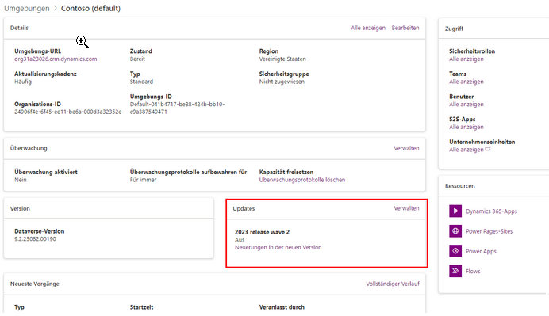

3. Unter Updates wird der neue Veröffentlichungszyklus als verfügbar angezeigt. Wählen Sie Verwalten aus.

4. Im Bereich Updates, der rechts auf dem Bildschirm erscheint, finden Sie einen Link, der Ihnen anzeigt, welche Funktionen in der neuesten Version enthalten sind. Beachten Sie die Warnungen, dass diese Aktualisierungen nicht rückgängig gemacht werden können, da dies die Leistung beeinträchtigen könnte und einige Stunden dauern kann.
Sobald Sie die Aktualisierungen aktiviert haben, wird im Bereich Updates die Meldung Aktivieren. angezeigt. Nachdem die Aktualisierung abgeschlossen ist, wird im Bereich der Status auf Ein gesetzt. Alle Funktionen für die Freigabe (oder den Vorabzugang) sind nun für die modellgesteuerten Apps in Ihrer Umgebung aktiviert.